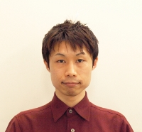

プロフィール

- 名前
- 神原 啓介
- Keisuke Kambara
- 生年月日
- 1982年 1月25日
- 現住所
- 東京都 世田谷区 三軒茶屋
- 出身
- 広島県 広島市
- 連絡先
- kambara@sappari.org
Webやヒューマン・コンピュータインタラクションに興味を持って研究および開発をしています。
人とコンピュータとの間に壁を感じさせない「クリアなユーザインタフェース」や、人のいい加減さ・曖昧さを許容する「人間味（Humor）のあるコンピュータ」、そしてコンピュータやネットを活用して「人の力を引き出すシステム」を作りたいと思っています。
対外発表など
学歴
- 2000年3月: 修道高校 卒業
- 2000年4月: 慶應義塾大学 理工学部 入学
- 2001年4月: 慶應義塾大学 環境情報学部 転部
- 2004年3月: 同上 卒業
- 2004年4月: 慶應義塾大学大学院 政策・メディア研究科 修士課程 入学
- 2006年3月: 同上 修了
学位
2012年2月: 博士（政策・メディア）（慶應義塾大学）
職歴
プロジェクト
受賞